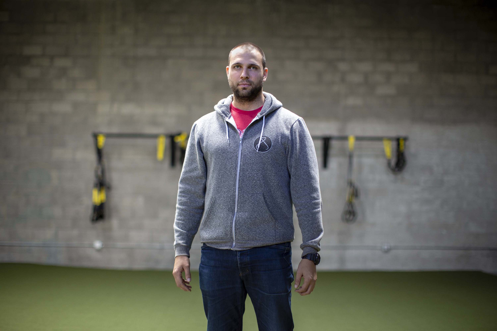
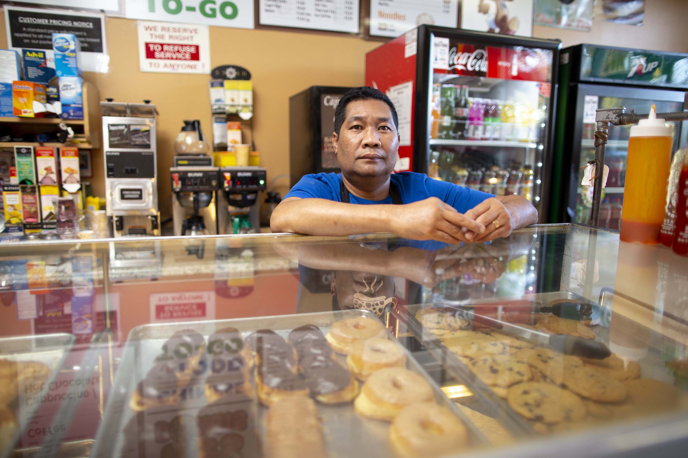

In 2020, California voters could raise property tax bills for their business-owning neighbors.
David Wagner/KPCC
#CADream
For the past 40 years, California property owners have benefited from the passage of Proposition 13, which limits annual increases on property taxes.
But a planned initiative could strip away one major aspect of Prop. 13. It would increase tax assessments on many businesses while leaving taxes on homes untouched.
A progressive group, including housing advocates and teachers unions, has submitted enough signatures to qualify the measure for the November 2020 ballot. It's known as “split roll,” because it would split homes and businesses onto separate tax rolls.
Owners holding more than $2 million in commercial property would no longer be taxed based on the original price they paid for their property. Instead, they would pay based on the property’s regularly re-assessed market value.
“This would generate over $10 billion a year for our schools and local communities, without having to continue to increase taxes on individuals,” says Ben Grieff, campaign director for Evolve California, one of the groups pushing for the split roll measure.

(Sean Havey for California Dream)
On this block in North Oakland, Prop. 13 has impacted business owners in some of the same ways it has affected homeowners. Newer entrepreneurs can end up paying much more in property tax than established business owners, in part because those who’ve owned property the longest benefit the most.
The challenges of running a new business in a hot market
Noah Kinner owns a gym at the end of the block. It’s in an industrial building that once housed a biker bar. This is Kinner’s second gym location, and his first time owning commercial property. He says many of the people who come here to work out live close by.
(Sean Havey for California Dream)
As long as the market value of Kinner’s building stays below $2 million, he would not be subject to the proposed split roll changes. But the way Oakland prices keep rising, he wonders how long he’d be able to qualify as an exempt small business.
"I know the value of the building has appreciated significantly since we bought it,” Kinner says. “But that doesn't translate into anything for me and my day-to-day business."
Under Prop. 13, Kinner’s property tax bill works pretty much the same way it does for his neighbors who own homes. It’s based on the price he paid for the building back in 2015 — not its market value today.
(Sean Havey for California Dream)
Considering all the other costs associated with running his gym, Kinner appreciates the stability.
If he lost that predictability, he says, staying open would be trickier. “If every year my valuation — like the Bay Area — is exceeding the rate that I'm able to grow my business, then I'm just incentivized to sell.”
Why supporters are for split roll
The idea of taxing commercial property differently than homes appeals to many Californians. Oakland resident Samuel Drew, who lives near the gym, likes the idea of keeping Prop. 13 in place for homeowners. But he says many businesses don’t need it.
"I think it's good for working people, to lower their taxes,” Drew says. “But when you're making millions and billions, it just doesn't hit me as fair."
Noah Kinner runs a gym on the corner. It’s a big, gray, industrial space.
However, statewide support for split roll has been declining, according to polling from the Public Policy Institute of California (PPIC). Sixty percent of likely voters were in favor of split roll back in 2012. That support has dropped to 46 percent today.
PPIC president Mark Baldassare says public support is likely to dip when the economy is strong and the state’s budget is healthy.
“I think that many voters look to the split roll as a possibility to help the state out of a financial crisis,” Baldassare says. “But we're not in a financial crisis at the moment.”
Perhaps the biggest selling point for proponents of split roll is how much it would raise in new tax revenue. A USC study found that it could bring in an additional $11.4 billion per year statewide.
"That could pay for a lot of services, healthcare workers and teachers,” says USC researcher and study co-author Jennifer Ito. Alameda County alone would take in about $550 million more each year, she says. “Every county in California would get additional revenue to go toward our local government and schools.”
Split roll backers question why Prop. 13 lets large, older corporations benefit from much lower tax assessments than newer companies right next door.

(Sean Havey for California Dream)
For instance, Intel owns a plot of land in the heart of Silicon Valley with an assessed value of about $2.50 per square foot. Meanwhile, just across the street, a professional office center is sitting on land with a recently assessed value of about $126 per square foot.
Split roll critics say employers already pay enough
But taxpayer groups say split roll would only make the cost of doing business in California more burdensome.
“If you talk to business owners and ask them if they're getting a pretty good deal on taxes in California, they will unanimously say no,” says David Kline with the California Taxpayers Association.
Business groups often describe property taxes as one bright spot for companies in a state that otherwise levies some of the highest taxes in the country.
A 2018 split roll analysis from the California Legislative Analyst’s Office concluded that raising business taxes relative to other states could “influence some businesses' decisions about whether to expand in or move to California.” But overall effects on the health of the state’s economy would be uncertain, according to the report.
(Sean Havey for California Dream)
Kline says if split roll passes, it’s not clear other taxes would come down.
“This particular initiative doesn't have any tax cuts to the sales tax or income tax to mitigate the problem,” he says. “It just has a punitive tax specifically targeted at California employers.”
Prop. 13 has benefited some long-term property owners in this rapidly changing Oakland neighborhood.
Just down the street from Kinner’s gym, there’s a donut shop. Cambodian immigrant Timothy Mom has been running it since 1990. He rents the space, but he pays property taxes to his landlord as part of his lease agreement. Mom says that bill comes out to about $135 a month.
He says that he’d have a much harder time starting his donut shop in this neighborhood today, especially if his taxes were tied to current property prices.
"Right now, it's very expensive to open a new business,” Mom says. “I believe that."